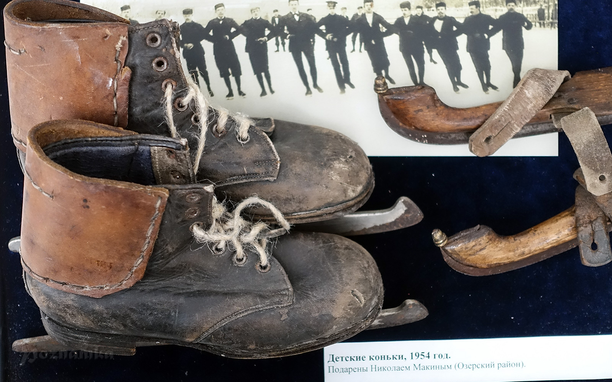

История возникновения конькобежного спорта
Конькобежный спорт является одним из самых древних видов спорта. Археологические находки говорят о том, что прототипами коньков люди пользовались более 3000 лет назад.
Развитие конькобежного спорта:
- В 1742 году в Шотландии начали появляться первые конькобежные клубы.
- В 1763 году были официально зафиксированы первые соревнования по бегу на коньках, но в то время не было четко сформулированных правил и это были просто гонки наперегонки.
- В 1772 году появились первые правила по конькобежному спорту.
- С 1830 года конькобежные клубы начали появляться в Англии, Америке и России.
- В 1879 году в Англии было организовано первое национальное первенство.
- В 1889 году в Нидерландах состоялся первый чемпионат мира по бегу на коньках.
- Победителем стал российский спортсмен Александр Паншин.
- В 1892 году был основан Международный союз конькобежцев (международная федерация конькобежного спорта), который присвоил соревнованиям 1889 года статус профессиональных и подобные соревнования стали проводиться ежегодно.
- Международный союз конькобежцев занимается организацией и проведением соревнований по конькобежному спорту.
- Чемпионаты Европы у мужчин стали проводиться с 1893 года, а у женщин с 1970.
- Конькобежный спорт входит в программу зимних Олимпийских игр с самого их основания.
- Изначально гонки проводились на четырёх дистанциях — 500, 1500, 5000, 10000 метров и в многоборье.
- В 1967 году Международный союз конькобежцев принял под свою эгиду шорт-трек, соревнования по которому начали проводиться с 1981 года.
- В 1992 году шорт-трек вошел в программу Олимпийских игр.
История конькобежного спорта в России
Первые чемпионаты России в 1889 — 1893 годах разыгрывались на дистанции 3 версты (3180 метров). Проводились забеги и финалы по 3 участка. На российское первенство приглашались иностранные спортсмены. В 1894 году разыгрывалась дистанция 3000 метров. Финал с раздельным стартом с интервалом 20 сек. В 1895 — 1907 годах чемпионат разыгрывался на двух дистанциях — 1500 и 5000 метров. Забеги осуществлялись парами. Для завоевания звания чемпиона России необходимо было победить на обеих дистанциях. В 1907 году впервые на чемпионате были разыграны награды среди юниоров на дистанции 1500 метров. С 1908 по 1914 годы чемпионат проводился на трёх дистанциях — 500, 1500 и 5000 метров. Для получения звания чемпиона России необходимо было победить на двух дистанциях. Последующие места распределялись по сумме очков на дистанциях. Все забеги проводились в один день. В 1913 году чемпионатом России по конькобежному спорту среди женщин были названы соревнования, организованные Московской лигой. Женщины соревновались на дистанции 500 метров. Победу одержала москвичка Елена Кремнечевская. Она пробежала спринтерскую дистанцию за 1.05,0, установив рекорд мира. В 1915 — 1917 года. Чемпионат разыгрывался на четырёх дистанциях — 500, 1500, 5000 и 10000 метров. Для победы надо выиграть три дистанции или набрать наименьшую сумму очков-мест, при условии победы на одной дистанции. С 1918 по 1922 проводились чемпионаты РСФСР, с 1923 по 1991 — чемпионаты СССР в классическом многоборье. В 1971 году был проведён первый чемпионат СССР в спринтерском многоборье. Советские конькобежцы впервые вышли на старт VII зимней Олимпиады в 1956 году и выиграли 7 призовых медалей. Первой советской чемпионкой мира стала Мария Исакова, она три раза подряд выигрывала первенство мира, завоевала три олимпийских награды. В 1957 году на XV первенстве мира среди женщин, проходившем в Иматре (Финляндия) советские спортсменки завоевали 13 призовых мест из 15 возможных. В столице Олимпиады-1964 Инсбруке Лидия Скобликова победила на всех четырёх дистанциях, и на 2010 год является единственной 6-кратной олимпийской чемпионкой в истории конькобежного спорта. Первым советским олимпийским чемпионом на самой длинной из олимпийских конькобежных дистанций — 10.000 метров стал Игорь Малков в Сараево (1984). В 1983 году спринтер Павел Пегов открыл новую эру конькобежных скоростей, установив мировые рекорды на дистанции 500 метров — 36,57 сек. и на 1000 м — 1.12,58 сек. на знаменитом катке Медео. В 1987 году популярный скороход Николай Гуляев выиграл все высшие конькобежные награды — стал чемпионом Европы и мира. Чемпионами мира и Олимпийских игр стали спортсмены В. Муратов, С. Марчук, Б. Стенин, Е. Куликов, И. Железовский, Т. Аверина, Н. Петрусева. Первый чемпионат России в классическом многоборье после распада Советского Союза состоялся в феврале 1992 года в Иркутске. В этом же год был проведён чемпионат в спринтерском многоборье. С 2003 года проводится чемпионат России по конькобежному спорту на отдельных дистанциях. С 2004 года чемпионаты России по конькобежному спорту стали проводиться на крытых катках в Москве, Челябинске и Коломне.